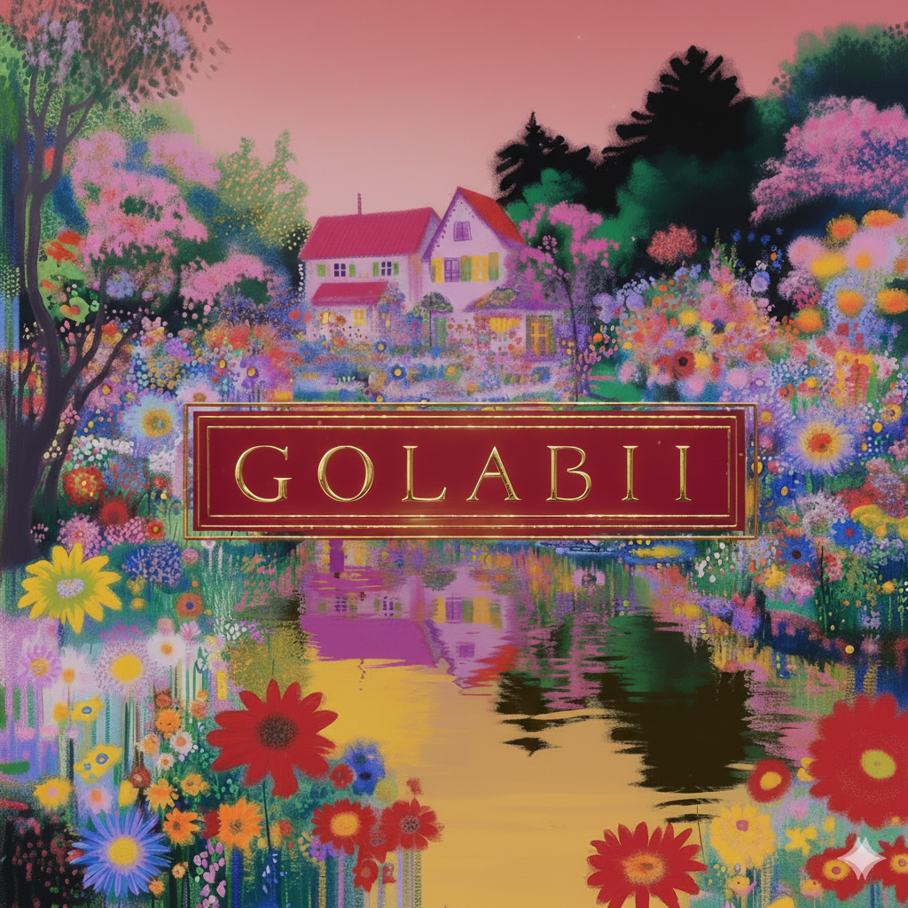
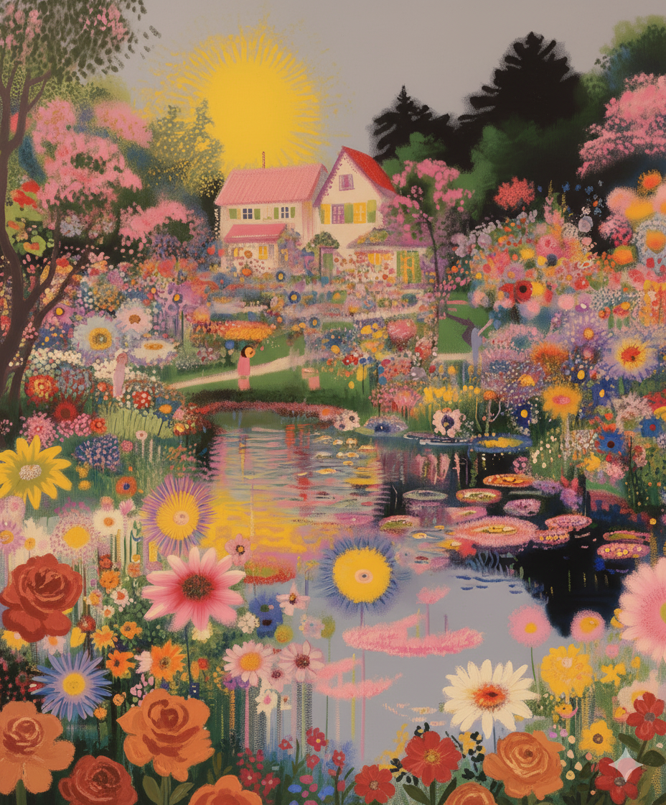

Hold the rug and pull. Choose a color to explore both scenes.
Why Golabii
A new kind of drink
from a new kind of company
A new kind of attempt at fixing the world. We're tired of corporations and people in power not caring about humanity. We are a new startup selling premium, never-before-seen ingredients and cultural drinks into your life to brighten up your day and your soul. Our ancient recipe is steam-distilled, superfood, anti-inflammatory, and neurotrophic — and our goal is to raise money and awareness to help the people of Iran, especially the women, students, and all those hurt in the protest genocide.
our dream
Building Hope,
One Sip at a Time
We are currently in contact with schools, clubs, and community leaders of the diaspora and expats to help make this a long-term effort for Iran. (We have unfortunately lost contact with our team inside Iran.)
Golabii: luxury premium ingredients, for good causes, by the people, for the people. Gifts, events, decentralized, community-based.
The sunken atelier: three Golabii vessels, a floral bottle, a clear pouch and a glass bottle filled with a deep red saffron drink, rest under saffron water on a Persian rug among floating rose petals.
Persian student communities
Where our people are

why we're special

The World's Most
Refreshing Drink
50% of all profits will be donated to helping rebuild Iran and those injured, with our goal being to reach 100% at some point.

The first pour is almost here
A garden you can lean into.
Come closer. Be first to know when Golabii is ready to pour.
Move or drag gently